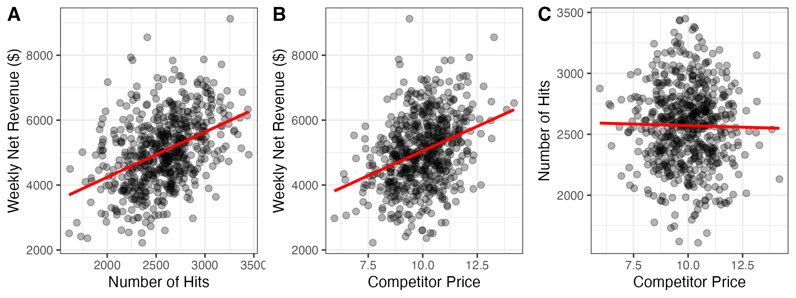

Week 6: October 9 2025
Get Data
Read in the datafile that I posted on Quercus under the “Lecture_6” slides. These are ficticious data about how one specific product listed on Amazon sells. I’ve also included a seperate “codebook” file for your convenience, which provides descriptions of each column in the data.csv file.
Run Descrptives
Before jumping in to model generation, it may be a good idea to run a few quick commands to check out the dataset:
Print Data Preview
| sales | price | marketing | competitor_price | traffic | season |
|---|---|---|---|---|---|
| 703 | 10.25 | 7.945 | 9.70 | 2898 | Q1 |
| 547 | 11.00 | 10.396 | 10.51 | 2320 | Q1 |
| 678 | 11.41 | 9.528 | 11.19 | 2597 | Q1 |
| 483 | 11.38 | 9.621 | 11.00 | 2341 | Q1 |
| 721 | 11.05 | 5.441 | 9.21 | 2476 | Q2 |
| 733 | 11.77 | 11.562 | 11.88 | 2748 | Q4 |
Each row is a week in this dataset
We have the number of sales, the price of the item, how much we spent on marketing that week (in 1000’s of $), what a competator has a similar product listed for, traffic (the number of people that clicked on the listing) and the season (Q1 - Q4)
All the variables except for season are numeric in nature.
Summary Statistics
## sales price marketing competitor_price
## Min. : 307 Min. : 8.48 Min. : 4.527 Min. : 5.95
## 1st Qu.: 642 1st Qu.:10.25 1st Qu.: 9.752 1st Qu.: 9.13
## Median : 742 Median :10.76 Median :12.207 Median :10.02
## Mean : 754 Mean :10.74 Mean :12.970 Mean : 9.96
## 3rd Qu.: 872 3rd Qu.:11.29 3rd Qu.:15.549 3rd Qu.:10.79
## Max. :1370 Max. :12.91 Max. :41.051 Max. :14.19
## traffic season
## Min. :1610 Length:600
## 1st Qu.:2354 Class :character
## Median :2589 Mode :character
## Mean :2571
## 3rd Qu.:2775
## Max. :3448We can glance through these summaries to see descriptive information about each column
Take now of how spread out the scores in each column are to get a feel for the data.
Data Structure
## spc_tbl_ [600 × 6] (S3: spec_tbl_df/tbl_df/tbl/data.frame)
## $ sales : num [1:600] 703 547 678 483 721 ...
## $ price : num [1:600] 10.2 11 11.4 11.4 11.1 ...
## $ marketing : num [1:600] 7.95 10.4 9.53 9.62 5.44 ...
## $ competitor_price: num [1:600] 9.7 10.51 11.19 11 9.21 ...
## $ traffic : num [1:600] 2898 2320 2597 2341 2476 ...
## $ season : chr [1:600] "Q1" "Q1" "Q1" "Q1" ...
## - attr(*, "spec")=
## .. cols(
## .. sales = col_double(),
## .. price = col_double(),
## .. marketing = col_double(),
## .. competitor_price = col_double(),
## .. traffic = col_double(),
## .. season = col_character()
## .. )
## - attr(*, "problems")=<externalptr>Similar to what we see in the working environment
Provides each column header, the type of data contained, and a few example values.
Histograms
Histograms convey the same information as the summary tables above. We can estimate the mean, the range, and understand the spread of the scores by looking at the shapes of the distributions.
I find that the visual pictures of the histograms are easier to understand than the values in the summary stats.
e.g., we sell an average of about 750 units per week. Or the amount we spend on marketing is right-skewed.
Looking at these charts also makes me wonder what we would see if we computed $ earned per week. This would make sense to do, because we really care about how much we earn, not how many units we sell.
We can compute a new column called dollars, which will contain information about how much we earned each week.
dat$dollars <- dat$sales * dat$price
dat$landed_cost <- 4 * dat$sales
dat$net_rev <- dat$dollars - dat$landed_costdat %>%
select(-"season") %>%
mutate(week = c(1:600)) %>%
melt(id.vars = "week") %>%
ggplot(aes(x = value)) +
geom_histogram(alpha = 0.2, colour = "Black") +
theme_bw() +
facet_wrap(~variable, scales = "free")
Check Correlations
First, we need to remove the season column because it is non-numeric, and we can’t compute correlations involving it.
I am assigning the data onto a new object,
ato preserve the complete data stored in the objectdat.This way, if I want to use that season column in some subsequent analysis, I won’t have to re-load the data from the .csv file.
Sales will be our outcome variable of interest. From a business perspective, we generally care about predicting sales more than anything else! Have a good understanding of how many sales we could expect under different conditions might inform us of how we want to strategically price our item, how much inventory to have on hand at any given time, etc.
A nice way to view all the pairwise correlations between the variables together is to create a correlation matrix, then plot it as a heatmap. I will show you how to accomplish this in a single chunk of code using ggplot() below.
cor(a) %>%
melt() %>%
mutate(value = round(value, 2)) %>%
ggplot(aes(x = Var1, y = Var2, fill = value, label = value)) +
geom_tile() +
geom_text(colour = "white") +
theme_bw() +
theme(axis.text.x = element_text(angle = 45, hjust = 1),
axis.title = element_blank()) +
labs(
fill = "Correlation \nCoefficient (r)"
)
There is a negative correlation between sales and price (when the price goes down, the sales go up).
There is a positive correlation between sales and traffic (the more people click on the listing, the more sales).
There is also a positive correlation between our item’s price and the competitor’s price (this is less useful to our modelling efforts than the two points written above).
Split the Data
First, we must split the existing data into a training set and a test set. We will randomly select 70% of the rows from the data to assign to the training set and the rest will be our test data.
## [1] 550 595 454 538 294 413Model Training
We will start with a “base model”, then test whether adding additional variables to it further improves its ability to model the data. In this scenario, it makes sense to use price ~ sales as the base model.
##
## Call:
## lm(formula = sales ~ price, data = train)
##
## Residuals:
## Min 1Q Median 3Q Max
## -426.56 -111.95 1.38 107.05 615.48
##
## Coefficients:
## Estimate Std. Error t value Pr(>|t|)
## (Intercept) 1690.05 116.49 14.507 < 0.0000000000000002 ***
## price -87.76 10.82 -8.111 0.00000000000000563 ***
## ---
## Signif. codes: 0 '***' 0.001 '**' 0.01 '*' 0.05 '.' 0.1 ' ' 1
##
## Residual standard error: 162.2 on 418 degrees of freedom
## Multiple R-squared: 0.136, Adjusted R-squared: 0.1339
## F-statistic: 65.79 on 1 and 418 DF, p-value: 0.00000000000000563A one-dollar increase in price is associated with a reduction in sales per week of 88 unites.
The effect of price on sales is statistically significant with p < 0.001.
The price of our item accounts for 13.6% of the variability in the number of sales we see across weeks (\(R^2\) = 0.136)
##
## Call:
## lm(formula = sales ~ price + traffic, data = train)
##
## Residuals:
## Min 1Q Median 3Q Max
## -379.90 -110.04 -7.81 99.18 464.21
##
## Coefficients:
## Estimate Std. Error t value Pr(>|t|)
## (Intercept) 1068.95025 121.62641 8.789 < 0.0000000000000002 ***
## price -82.22217 9.73864 -8.443 0.000000000000000518 ***
## traffic 0.21895 0.02183 10.031 < 0.0000000000000002 ***
## ---
## Signif. codes: 0 '***' 0.001 '**' 0.01 '*' 0.05 '.' 0.1 ' ' 1
##
## Residual standard error: 145.8 on 417 degrees of freedom
## Multiple R-squared: 0.3039, Adjusted R-squared: 0.3006
## F-statistic: 91.04 on 2 and 417 DF, p-value: < 0.00000000000000022The price of the item and the number of visits to the item’s page are unique (independent) predictors of the number of sales (both p < 0.001)
Together, the item’s price and the number of clicks to the page account for 30% of the variability in sales per week.
We can formilly test whether the more complex model (involving both traffic and price) is statistically better than our base model (where price is the only predictor)
## Analysis of Variance Table
##
## Model 1: sales ~ price
## Model 2: sales ~ price + traffic
## Res.Df RSS Df Sum of Sq F Pr(>F)
## 1 418 11000454
## 2 417 8862079 1 2138375 100.62 < 0.00000000000000022 ***
## ---
## Signif. codes: 0 '***' 0.001 '**' 0.01 '*' 0.05 '.' 0.1 ' ' 1- The analysis of variance (ANOVA) indicates that
model_2performed significantly better than the base model (p < 0.001)
Let’s try add another predictor from the data:
##
## Call:
## lm(formula = sales ~ price + traffic + competitor_price, data = train)
##
## Residuals:
## Min 1Q Median 3Q Max
## -385.10 -99.98 -8.45 95.69 484.35
##
## Coefficients:
## Estimate Std. Error t value Pr(>|t|)
## (Intercept) 1067.18656 115.10904 9.271 < 0.0000000000000002 ***
## price -128.21046 11.29706 -11.349 < 0.0000000000000002 ***
## traffic 0.22437 0.02067 10.854 < 0.0000000000000002 ***
## competitor_price 48.36781 6.87059 7.040 0.000000000008 ***
## ---
## Signif. codes: 0 '***' 0.001 '**' 0.01 '*' 0.05 '.' 0.1 ' ' 1
##
## Residual standard error: 138 on 416 degrees of freedom
## Multiple R-squared: 0.378, Adjusted R-squared: 0.3736
## F-statistic: 84.28 on 3 and 416 DF, p-value: < 0.00000000000000022The item’s price, the number of hits on our Amazon page, and the competitor’s price are all significant unique predictors of the number of weekly sales (all p < 0.001)
Combined, variability in these three predictors’ levels account for 37.8% of the variability in number of sales.
Again, we can use the anova command to test whether adding the new predictor significantly improved model fit over our current best model:
## Analysis of Variance Table
##
## Model 1: sales ~ price + traffic
## Model 2: sales ~ price + traffic + competitor_price
## Res.Df RSS Df Sum of Sq F Pr(>F)
## 1 417 8862079
## 2 416 7918702 1 943378 49.559 0.000000000007996 ***
## ---
## Signif. codes: 0 '***' 0.001 '**' 0.01 '*' 0.05 '.' 0.1 ' ' 1- Since p < 0.001,
model_3does a significantly better job at fitting the data than doesmodel 2
Ok, so let’s make one more model with all four predictors entered:
model_4 <- lm(sales ~ price + traffic + competitor_price + marketing, data = train)
summary(model_4)##
## Call:
## lm(formula = sales ~ price + traffic + competitor_price + marketing,
## data = train)
##
## Residuals:
## Min 1Q Median 3Q Max
## -373.43 -103.27 -6.93 99.14 481.66
##
## Coefficients:
## Estimate Std. Error t value Pr(>|t|)
## (Intercept) 1047.59456 116.75866 8.972 < 0.0000000000000002 ***
## price -127.78228 11.30510 -11.303 < 0.0000000000000002 ***
## traffic 0.22433 0.02067 10.852 < 0.0000000000000002 ***
## competitor_price 48.07517 6.87677 6.991 0.000000000011 ***
## marketing 1.39738 1.39510 1.002 0.317
## ---
## Signif. codes: 0 '***' 0.001 '**' 0.01 '*' 0.05 '.' 0.1 ' ' 1
##
## Residual standard error: 138 on 415 degrees of freedom
## Multiple R-squared: 0.3795, Adjusted R-squared: 0.3736
## F-statistic: 63.46 on 4 and 415 DF, p-value: < 0.00000000000000022The item’s price, the number of visits to the page, and the competator’s price are all significant unique predictors, over and above the influence of marketing $ spent (all p < 0.001)
Marketing spend is not a significant unique predictor of sales.
Combined, these predictors account for 37.95% of the variability in the number of weekly sales.
Compare model_4 to model_3:
## Analysis of Variance Table
##
## Model 1: sales ~ price + traffic + competitor_price
## Model 2: sales ~ price + traffic + competitor_price + marketing
## Res.Df RSS Df Sum of Sq F Pr(>F)
## 1 416 7918702
## 2 415 7899604 1 19097 1.0033 0.3171model_4is not a significantly better fit to the data thanmodel_3Therefore,
model_3performed the best out of the options that we tested.
Apply model_3 to the Test Data
In order to investigate how well model_3 will perform on data that it has never seen before, we can superimpose it over the test data and investigate how well the line fits:
The key metric of model fit is the \(RMSE\) (root mean squared error) which tells us the amount of unexplained variability:
## [1] 127.142Here, \(RMSE\) = 127.14.
To interpret the RMSE, we compare to the residual error that was leftover when that model was generated on the training dataset.
## [1] 137.3101In this case, the model actually performed a little better on the test data than it did during training!
This is very strong evidence that the current model will perform well predicting future sales.
Remake the models with net_rev as the DV
## # A tibble: 6 × 9
## sales price marketing competitor_price traffic season dollars landed_cost
## <dbl> <dbl> <dbl> <dbl> <dbl> <chr> <dbl> <dbl>
## 1 703 10.2 7.94 9.7 2898 Q1 7206. 2812
## 2 547 11 10.4 10.5 2320 Q1 6017 2188
## 3 678 11.4 9.53 11.2 2597 Q1 7736. 2712
## 4 483 11.4 9.62 11 2341 Q1 5497. 1932
## 5 721 11.0 5.44 9.21 2476 Q2 7967. 2884
## 6 733 11.8 11.6 11.9 2748 Q4 8627. 2932
## # ℹ 1 more variable: net_rev <dbl>##
## Call:
## lm(formula = net_rev ~ traffic, data = dat)
##
## Residuals:
## Min 1Q Median 3Q Max
## -2517.2 -689.5 -50.6 631.3 3739.6
##
## Coefficients:
## Estimate Std. Error t value Pr(>|t|)
## (Intercept) 1455.5291 321.1477 4.532 0.00000705 ***
## traffic 1.3930 0.1239 11.242 < 0.0000000000000002 ***
## ---
## Signif. codes: 0 '***' 0.001 '**' 0.01 '*' 0.05 '.' 0.1 ' ' 1
##
## Residual standard error: 988.4 on 598 degrees of freedom
## Multiple R-squared: 0.1745, Adjusted R-squared: 0.1731
## F-statistic: 126.4 on 1 and 598 DF, p-value: < 0.00000000000000022##
## Call:
## lm(formula = net_rev ~ price + traffic + competitor_price, data = dat)
##
## Residuals:
## Min 1Q Median 3Q Max
## -2492.8 -615.9 -38.3 577.4 3306.2
##
## Coefficients:
## Estimate Std. Error t value Pr(>|t|)
## (Intercept) -953.6049 631.8273 -1.509 0.132
## price -99.4490 61.6952 -1.612 0.108
## traffic 1.4113 0.1144 12.336 <0.0000000000000002 ***
## competitor_price 344.3674 36.8791 9.338 <0.0000000000000002 ***
## ---
## Signif. codes: 0 '***' 0.001 '**' 0.01 '*' 0.05 '.' 0.1 ' ' 1
##
## Residual standard error: 912.2 on 596 degrees of freedom
## Multiple R-squared: 0.2992, Adjusted R-squared: 0.2957
## F-statistic: 84.81 on 3 and 596 DF, p-value: < 0.00000000000000022##
## Call:
## lm(formula = net_rev ~ traffic + competitor_price + price, data = dat)
##
## Residuals:
## Min 1Q Median 3Q Max
## -2492.8 -615.9 -38.3 577.4 3306.2
##
## Coefficients:
## Estimate Std. Error t value Pr(>|t|)
## (Intercept) -953.6049 631.8273 -1.509 0.132
## traffic 1.4113 0.1144 12.336 <0.0000000000000002 ***
## competitor_price 344.3674 36.8791 9.338 <0.0000000000000002 ***
## price -99.4490 61.6952 -1.612 0.108
## ---
## Signif. codes: 0 '***' 0.001 '**' 0.01 '*' 0.05 '.' 0.1 ' ' 1
##
## Residual standard error: 912.2 on 596 degrees of freedom
## Multiple R-squared: 0.2992, Adjusted R-squared: 0.2957
## F-statistic: 84.81 on 3 and 596 DF, p-value: < 0.00000000000000022The effects of traffic and the other guy’s price remain significant even after controlling for our price point
Our price point is not a significant unique predictor of revenue when controlling for the other factors in the model
a <- dat %>%
ggplot(aes(x = traffic, y = net_rev)) +
geom_point(size = 2, alpha = 0.3) +
geom_smooth(method = "lm", se = F, colour = "red") +
theme_bw()+
labs(
x = "Number of Hits",
y = "Weekly Net Revenue ($)"
)
b <- dat %>%
ggplot(aes(x = competitor_price, y = net_rev)) +
geom_point(size = 2, alpha = 0.3) +
geom_smooth(method = "lm", se = F, colour = "red") +
theme_bw()+
labs(
x = "Competitor Price",
y = "Weekly Net Revenue ($)"
)
c <- dat %>%
ggplot(aes(x = competitor_price, y = traffic)) +
geom_point(size = 2, alpha = 0.3) +
geom_smooth(method = "lm", se = F, colour = "red") +
theme_bw()+
labs(
x = "Competitor Price",
y = "Number of Hits"
)
panel <- ggarrange(a,b,c,
nrow = 1,
labels = c("A","B","C"))
ggsave("Figs/panel.png", height = 3, width = 8, dpi = 300)
knitr::include_graphics("Figs/panel.png")